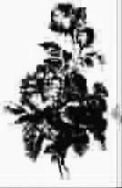

诗二首
终 结
●〔英〕克里斯蒂娜·罗塞蒂
○陆家齐 译
爱，如死一般强，也已经死亡，
来吧，在凋谢的百花丛中，
让我们给它寻找一个安息的地方。
在它的头旁栽上青草，
再放一块石头在它的脚边，
这样，我们可以坐在上面，
在黄昏寂静的时光。
它诞生在春天，
却夭折在秋收以前；
在一个温暖的夏天，
它离我们而去，不再回来！
它害怕秋天的黄昏，
又冷又灰暗。
我们坐在它的墓旁，
叹息它的死亡。
轻轻地拨动琴弦，
我们悲哀地低声歌唱：
“我们的目光倾注在青青的草上，
当岁月流逝，它们也披满了忧伤；
眼前的一切恍如昨日，
可是，那已是很久、很久以前！”
(杨 妮摘自《世界文化》)
幸 福
●〔南斯拉夫〕马克西莫维奇
○柴盛萱 译
我计时不再按钟点，
也不按烈日的运行；
当他的明眸归来，便是我的白天，
而当他重新离去，便是我的黑夜。
我衡量幸福不按微笑，
也不按是否我的渴望比他更强烈；
我的幸福是当我和他在一起伤心沉默，
以及我们的心脏依抱头痛哭的韵律而跳动。
我不遗憾生命之水将把我的绿枝也夺走；
现在就让青春和一切都离去吧，
令人心醉的他曾与我并立。
(安 岩摘)